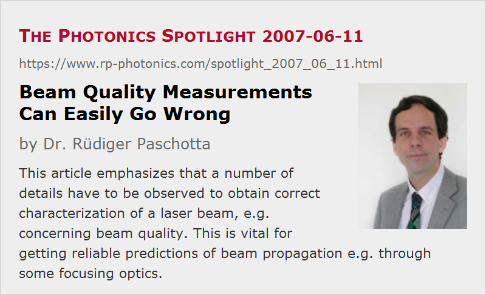

Beam Quality Measurements Can Easily Go Wrong
Posted on 2007-06-11 as a part of the Photonics Spotlight (available as e-mail newsletter!)
Permanent link: https://www.rp-photonics.com/spotlight_2007_06_11.html
Author: Dr. Rüdiger Paschotta, RP Photonics Consulting GmbH
Abstract: This article emphasizes that a number of details have to be observed to obtain correct characterization of a laser beam, e.g. concerning beam quality. This is vital for getting reliable predictions of beam propagation e.g. through some focusing optics.

Ref.: encyclopedia articles on beam quality, M2 factor, beam radius
It is well known that the beam quality of a laser beam can be measured by recording the caustic, i.e., the beam radius as a function of position along the beam, and then fitting a relatively simple function to these data. Unfortunately, the obtained results are very often quite wrong, because many details have to be observed. Some examples for possible errors are:
- For beams with non-Gaussian intensity profiles, as often occur e.g. with high power laser diodes, one has to use a proper definition of the beam radius, based on an integral of the intensity distribution.
- It is necessary to choose a suitable set of measurement points along the beam propagation direction. You need sufficiently many points close to the beam focus, and also a similar number of points far enough from the focus – more precisely, in a distance of at least two Rayleigh lengths from the focus.
- Further aspects concern the details of the fitting procedure. For example, you have to minimize the sum of the squared relative deviations.
Such requirements are defined in great detail in ISO Standard 11146. “Why should I care about that standard?”, some people may ask. The answer is simple: because you want correct values, whether you use the data yourself, or publish them. And that isn't simply a matter of definition; the details of ISO 11146 have not been determined just arbitrarily, but with good reasons. In particular, they are made so that the calculation of beam propagation e.g. through some focusing optics can bring reliable results. Only with a correctly determined M2 factor (beam quality factor), you can describe the beam propagation as for Gaussian beams, but inserting M2 times the wavelength for the actual optical wavelength.
It is easy to imagine what can happen otherwise. As an example, you characterize the output beam of a laser diode and use the result to select and place the optics for focusing the pump beam of a diode-pumped laser. As a sanity check, you characterize the obtained beam and find that the focus is not as expected – and not suitable. So you somewhat modify your optics until you obtain the right beam parameters. This iteration is time-consuming. If you skip this, however, and just go with building you laser, it can be even worse – see the previous Spotlight article “Characterize Your Pump Beam”! So you better start with properly characterizing the pump beam, observing all the details in order to avoid the more troublesome extra loops.
This article is a posting of the Photonics Spotlight, authored by Dr. Rüdiger Paschotta. You may link to this page and cite it, because its location is permanent. See also the RP Photonics Encyclopedia.
Note that you can also receive the articles in the form of a newsletter or with an RSS feed.
Questions and Comments from Users
Here you can submit questions and comments. As far as they get accepted by the author, they will appear above this paragraph together with the author’s answer. The author will decide on acceptance based on certain criteria. Essentially, the issue must be of sufficiently broad interest.
Please do not enter personal data here; we would otherwise delete it soon. (See also our privacy declaration.) If you wish to receive personal feedback or consultancy from the author, please contact him e.g. via e-mail.
By submitting the information, you give your consent to the potential publication of your inputs on our website according to our rules. (If you later retract your consent, we will delete those inputs.) As your inputs are first reviewed by the author, they may be published with some delay.
|  |
If you like this page, please share the link with your friends and colleagues, e.g. via social media:
These sharing buttons are implemented in a privacy-friendly way!